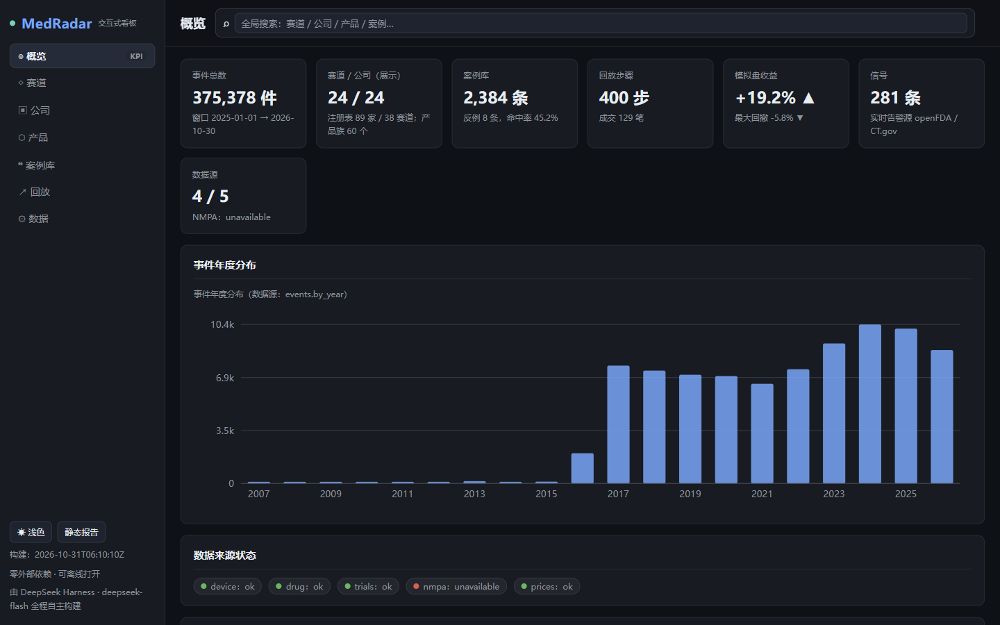

Frozen artefacts
Experiments are immutable inputs. A rerun that changes a number produces a new artefact; the old one stays and is cited by path.
Research infrastructure · MIT · v0.5.0
MedRadar collects free public regulatory, clinical-trial and corporate-filing evidence about device and drug makers into one event store — then tests, with frozen experiments, named baselines and published negative results, whether that evidence carries signal before the market notices.
docs/metrics.json → meta.event_total
docs/DATA.md → sources
docs/DATA.md → coverage window
PROJECT_STATE.yaml → tests
What MedRadar is
The deliverable is the engineering and the honest record: an auditable event store, frozen experiment artefacts with named baselines, and negative results published at the same size as the positive ones.
Experiments are immutable inputs. A rerun that changes a number produces a new artefact; the old one stays and is cited by path.
Every model is scored against a stated base rate — not against an unnamed default — so “better” has a definition.
“No detectable gain” is published as the result, with its measurement, next to the positive table.
Nine limitations are on the repository front page; this site repeats the ones that change how a number may be read.
Platform
Six sources feed one SQLite event store behind a rate-limited HTTP layer. Registries, analysis, statistics, the bitemporal store and the forecast registry read from it; reports and the dashboard publish from it. Dashed nodes are roadmap drafts and are not wired in.

source: docs/assets/architecture/architecture-en-light.svg · generated from the repository tree, not a mock-up
Platform detail: source inventory, coverage and capability matrix
Capabilities
implemented runs on main and is exercised by the offline suite; limited works with a measured, named gap; draft and planned are not shipped.
openFDA device 510(k) / PMA / recall / classification, openFDA drug approvals, ClinicalTrials.gov v2 and the SEC EDGAR 8-K corpus land in one event schema; counts reproduce from live sources.
medradar/collect_device.py · collect_drug.py · clinical.py · corpus.pyevent_date, available_at and timestamp_quality on
every row, plus an append-only revision ledger behind events — explicitly
not tamper-proofing.
35.2 % of events carry a company key and 52.4 % a technology track. Unmatched events are counted and reported, never guessed.
medradar/config.py · config/*.jsonTrack heat (shrinkage-adjusted rate), mix shift (Jensen–Shannon) and novelty (first occurrence) are descriptive, in-sample scores — not validated signals.
medradar/analyze.pyDirection-aligned abnormal returns with a block bootstrap, an event replay and a long-only simulated book. Simulation lane: in-sample, 38 trades, no out-of-sample claim.
medradar/eventstudy.py · replay.py · paper.pyA Chinese report, an English one-pager, a CSV and a self-contained dashboard are
generated from one metrics.json. Generated artefacts, not a live service.
source: README.md → What is implemented, and how far it is validated; PROJECT_STATE.yaml → capabilities; docs/DATA.md
Research
All results are descriptive and in-sample. The negative results are the deliverable, not a footnote.
n = 61, t = 2.45, 95 % CI [+1.35 %, +10.32 %], Holm-corrected over the full category × horizon family. In-sample simulation, long-only, 38 simulated trades over ~11 months.
docs/metrics.json → trading.event_study; README table
Marginal PR-AUC on continuation: financial −0.0013, market −0.0015, publication −0.0001, all sources −0.0068. Model AP 0.7935 against a per-pair base rate of 0.7913. More data improved calibration (ECE 0.0811 → 0.0628), not ordering.
experiments/reverse_rd_v1/, reverse_rd_v2/; README table
The five-firm early-signal study returned CONDITIONAL-GO at Phase 0; the gate that matters — was the change detectable earlier — did not pass. S-028 / S-029 are branch-only drafts and are not presented as shipped.
research/
Caveat carried with every return number: the snapshot has no independent public time (0 of 375,378 rows), so these are not point-in-time results and not investment advice.
Artefacts
Every screenshot on this site is a capture of an artefact the repository generates; none is a mock-up and none is fabricated UI.

medradar dashboard.
capture: docs/assets/screenshots/dashboard-desktop.png · 1440 × 900
Dashboard, static report, event replay and the research figures, with a note on how to read each one.
Open ExploreSelf-contained HTML with all data inlined: tracks, companies, products, cases, replay and the data audit. Opens offline.
Open dashboard.htmlThe generated Chinese research report and its English one-pager, rendered as one self-contained page.
Open report.htmlReproduce
The package installs with the standard library only. The test suite needs no network connection and no API key.
Python 3.10, 3.11 and 3.12 are the CI targets.
1,160 collected: 1,157 passed, 3 skipped. No network, no credentials.
medradar demo writes out/demo/index.html from the committed
snapshot in under 60 s.
medradar run needs network and takes about three minutes; still no API
key.
source: README.md → Reproduce; PROJECT_STATE.yaml → tests
git clone https://github.com/ChazY11/medradar.git
cd medradar && pip install -e .
# 1,160 offline tests · no network · no API key
python -m pytest -q -o addopts=""
# offline demo from the committed snapshot
medradar demo
# live radar run: network needed, ~3 minutes
medradar run --months 24 --with-trade --with-dashboardRoadmap
Each open item carries the blocker that makes it open, so “planned” cannot be mistaken for “shipped”.
EDGAR first: its acceptance timestamp can carry a true public instant today. Without this, no point-in-time claim is possible.
The registry holds registered forecasts with no matured windows, so no calibration claim can be made at all.
The relation graph currently informs the research agent only, not the scoring models.
Patents were not evaluated. Procurement is excluded: its snapshot is not point-in-time usable.
NMPA is deliberately not scraped; the AdCom collector parses zero rows because the calendar is rendered client-side.
source: README.md → Roadmap; ROADMAP.md; PROJECT_STATE.yaml
Start here
The method contract, the schema and the limitation list explain what each number may be used for. Everything else in the repository follows from them.